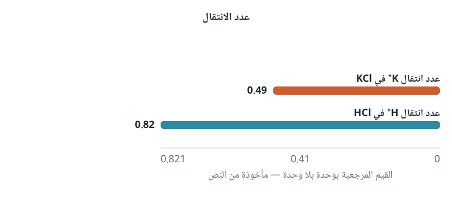

عدد الانتقال
Transference number
عدد الانتقال هو نصيب أيون معين من التيار الكلي في إلكتروليت: t_i = I_i/I. يحدد أي أيون يحمل التيار فعلياً، ويُستعمل في حساب فرق الجهد الأومي في الخلايا وفي تصميم البطاريات.
في الإلكتروليت يحمل التيار أيونات موجبة وسالبة معاً. ونصيب كل نوع من التيار الكلي هو عدد انتقاله: t₊ + t₋ = 1. وهو لا يتناسب مع التركيز بل مع الحركة الأيونية، لأن الأيون الأسرع يحمل نصيباً أكبر. ويُعرَّف: t_i = |z_i|·u_i·c_i/Σ|z_j|·u_j·c_j، حيث u الحركة الأيونية. مثال: في محلول KCl، الحركة الأيونية لـK⁺ هي 7.62×10⁻⁸ m²/(V·s) ولـCl⁻ هي 7.91×10⁻⁸ m²/(V·s)، فيكون t₊ = 7.62/(7.62+7.91) = 0.491 وt₋ = 0.509.
كيف تعمل الظاهرة؟
عند تطبيق مجال كهربائي، تتحرك الأيونات الموجبة نحو الكاثود والسالبة نحو الأنود. وسرعة كل أيون تتناسب مع شحنته ومع حركته الأيونية التي تعتمد على حجمه المميَّه ولزوجة الماء. والأيون الصغير كالهيدروجين يتحرك بآلية قفز عبر جزيئات الماء لا بانتقال كامل، فيكون أسرع بكثير. ولهذا يحمل الأسرع نصيباً أكبر من التيار، ولا يتوزع التيار بالتساوي بين الأيونات.
العلاقة بالأرقام
t_i = λ_i/Λ_m، وΛ_m = Σλ_i. مثال KCl: λ(K⁺) = 73.5×10⁻⁴ S·m²/mol وλ(Cl⁻) = 76.3×10⁻⁴، فـΛ_m = 149.8×10⁻⁴، وt₊ = 73.5/149.8 = 0.491. ولـHCl: λ(H⁺) = 349.8×10⁻⁴ وλ(Cl⁻) = 76.3×10⁻⁴، فـΛ_m = 426.1×10⁻⁴، وt₊ = 349.8/426.1 = 0.821.
مفاهيم متقاربة
يُفرَّق بين عدد الانتقال والكسر المولي: الأول نسبة تيار والثاني نسبة جزيئات. ويُفرَّق بين العدد الحقيقي والظاهري: الحقيقي من تحليل التغير في تركيز الأقطاب، والظاهري من قياس فرق الجهد. ويُفرَّد بين عدد الانتقال والموصلية الأيونية: الموصلية مقدار مطلق، وعدد الانتقال نسبة. وأخيراً يُفرَّق بين عدد الانتقال في الإلكتروليت القوي والضعيف، حيث يتغير بتغير درجة التفكك.
حدود التطبيق
القيمة تتغير مع التركيز، لأن الحركات الأيونية تتأثر بالتفاعلات الأيونية. ولا تصلح القيم عند التخفيف اللانهائي للمحاليل المركّزة. ولا تصف المحاليل التي فيها انتقال مشترك كالتوصيل الإلكتروني في البوليمرات الموصلة. ولا تُستعمل في حساب فرق جهد الخلية دون احتساب فرق جهد الانتشار الناتج عن اختلاف أعداد الانتقال.

| الكمية | القيمة | المصدر |
|---|---|---|
| عدد انتقال K⁺ في KCl | 0.491 بلا وحدة | [1] |
| عدد انتقال H⁺ في HCl | 0.821 بلا وحدة | [1] |
المصادر
- 1 CODATA Value: elementary charge — NIST — CODATA 2022 recommended values (2024). physics.nist.gov/cgi-bin/cuu/Value?e · اطُّلع عليه 2026-11-22
- 2 CODATA Value: Avogadro constant — NIST — CODATA 2022 recommended values (2024). physics.nist.gov/cgi-bin/cuu/Value?na · اطُّلع عليه 2026-11-22
- 3 CODATA Value: molar gas constant — NIST — CODATA 2022 recommended values (2024). physics.nist.gov/cgi-bin/cuu/Value?r · اطُّلع عليه 2026-11-22
استشهد بهذا المصطلح
الصيغتان مبنيتان من بيانات الصفحة نفسها: العنوان والتاريخ ورابط النسخة المنشورة.
عدد الانتقال — Transference number. (2026). ديوان المعرفة — انفراد. https://infiradev.com/diwan/terms/term-transference-number.html
@misc{term-transference-number2026,
title = {عدد الانتقال},
titleaddon = {Transference number},
howpublished = {{ديوان المعرفة — انفراد} — مرجع علمي عربي},
year = {2026},
url = {https://infiradev.com/diwan/terms/term-transference-number.html},
urldate = {2026-11-26},
note = {مراجعة علمية: hermes (مراجعة معتمدة 2026-11-26)}
}
راجعه: hermes (مراجعة معتمدة 2026-11-26) · 2026-11-26 · آخر تحديث 2026-11-22